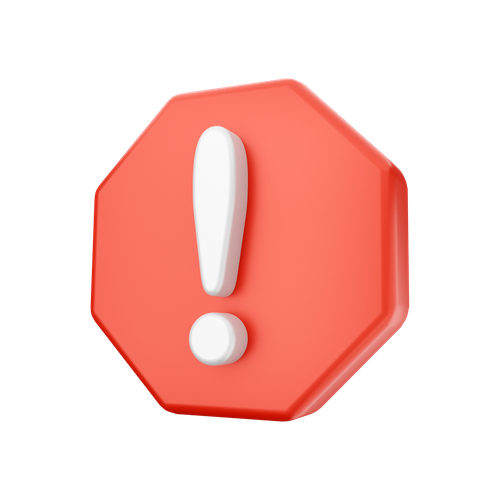

Guide Casinò
Guide Sport
Guide Casinò Live
Calcolatore Funbonus Casinò
 Controlla sempre i Termini e Condizioni prima di iniziare a sfruttare una promozione.
 Se non riconosci qualche termine controlla la sezione "Termini utili" nelle nostre guide.
Come convertire un Fun Bonus Casinò
Facciamo un esempio pratico. Un Casinò online offre un bonus pari al 100% sul primo deposito fino a €200 con wagering x35. Supponendo di depositare €200, il volume di gioco per prelevare il bonus sarà di (200 x 35) €7.000.
Una volta giocati €7.000 dunque, tutto il saldo Fun restante verrà convertito in Real Bonus.
Se non riconosci qualche termine controlla la sezione "Termini utili" nelle nostre guide.
Come convertire un Fun Bonus Casinò
Facciamo un esempio pratico. Un Casinò online offre un bonus pari al 100% sul primo deposito fino a €200 con wagering x35. Supponendo di depositare €200, il volume di gioco per prelevare il bonus sarà di (200 x 35) €7.000.
Una volta giocati €7.000 dunque, tutto il saldo Fun restante verrà convertito in Real Bonus.
Tuttavia la maggior parte dei casinò, per tutelarsi, impongono un valore massimo di Real Bonus che puoi ottenere convertendo il Fun Bonus.
Questo valore viene indicato come CAP, che nella maggior parte dei casi viene impostato all’importo iniziale del Fun Bonus.
In questo caso, se il bonus ipotizzato prima avesse un CAP pari al suo valore iniziale (di €200), e supponiamo terminassi il requisito di gioco richiesto rimanendo con €500 di saldo Fun, esso verrebbe convertito in €200 real bonus, mentre l’eccedenza stornata.
Ogni casinò ha le sue regole riguardo al CAP dei Fun Bonus che eroga, controlla sempre T&C del sito e delle sue promozioni.
Strategia di monetizzazione
La difficoltà nel monetizzare i Fun Bonus sta nel fatto che i giochi del casinò
hanno un RTP inferiore al 100%, dunque la previsione alla base è che senza strategia, nel lungo periodo il giocatore occasionale sarà quasi sempre perdente, terminando il saldo Fun prima di completare i requisiti di puntata richiesti.
La strategia di noi professionisti è di sfruttare il fattore varianza a nostro vantaggio.
L’obiettivo sarà quello di ottenere una grande vincita fin da subito, che ci permetta poi di completare con ottime probabilità il wagering, disponendo di un importo bonus maggiore.
Possiamo dunque dividere il nostro piano in 2 fasi:
FASE 1: ricercheremo una varianza elevata, effettuando puntate di importo alto, alla ricerca di una grande vincita.
FASE 2: in caso di vincite sufficienti, ci sposteremo su una slot a bassa volatilità, effettuando spin di importo minimo, in modo tale da completare il wagering preservando quanto possibile il nostro saldo Fun rimanente.
È proprio nella prima fase che entra in gioco il Wagerbreaker, l’unico strumento sul mercato che ti consente di massimizzare la probabilità di trarre profitto dai Fun Bonus, che altrove vengono lasciati completamente al caso.
Presentazione dello strumento
Questo strumento è configurato per stimare l’importo spin più adeguato al fine di ottenere una vincita tale da permetterti di completare il wagering richiesto, traendo un profitto.
È in grado di farlo perché tiene conto di tutti i parametri che entrano in gioco quando ci troviamo di fronte ad un Fun Bonus:
- Bonus iniziale, bonus corrente & CAP.
- Wagering & percentuale di wag completata.
- Volatilità della slot scelta per ottenere la vincita iniziale. (Fase 1)
- RTP e volatilità della slot scelta per il completamento del wagering. (Fase 2)
Ciò è fantastico perché:
- Ti permette di rimuovere i tuoi dubbi riguardanti la scelta dell’ importo spin da utilizzare.
- Svolge tutti i calcoli al posto tuo riducendo il tuo coinvolgimento emotivo.
- Ti aiuta a guadagnare di più permettendoti di convertire un maggior numero di Fun Bonus.
Capirai presto come questo fantastico strumento si trasformerà nel tuo più fedele alleato quando si tratterà di affrontare un Fun Bonus!
Guida all'utilizzo
Iniziamo con il descrivere ogni campo compilabile del nostro strumento:
- Volatilità: informati sulla volatilità della slot che stai utilizzando e compila il campo correttamente. Se non conosci il suo effettivo valore ti consigliamo di inserire "MEDIA".
- Bonus iniziale: inserisci il valore del Funbonus ottenuto,
- Wagering: inserisci il wagering menzionato nei T&C. Non ti preoccupare del wagering reale, verrà calcolato da noi.
- Contribuzione slot: inserisci la contribuzione delle slot. Insieme al wagering ci permetterà di capire il wagering reale del tuo Funbonus.
- CAP Bonus: inserisci il valore massimo convertibile in Real Bonus. Se il Funbonus che stai monetizzando non ha un CAP ti consigliamo di inserire il valore iniziale del Funbonus.
- Roll Completato: inserisci la percentuale del rollover completato.
- Funbonus Rimanente: inserisci il valore del funbonus rimanente.
I valori che vanno cambiati durante il rollover sono i seguenti:
- Roll Completato.
- Funbonus Rimanente.
Ci permetteranno di darti la stima dello spin da utilizzare per cercare di aumentare correttamente il tuo Funbonus.
Introduciamo ora i valori calcolati dal nostro strumento.
Vanno divisi in due gruppi: i dati utili solo all'inizio del nostro rollover, ossia quando la percentuale di rollover equivale a 0%, e le variabili utili anche dopo aver iniziato il rollover.
Il primo gruppo é composto da:
- Probabilità di monetizzazione: é la percentuale che ci permette di capire statisticamente la quantità di Funbonus che andremo a monetizzare.
- Guadagno statistico: basandoci sulla probabilità di monetizzazione, questo valore é il guadagno statistico del Funbonus ottenuto.
Questi dati non hanno nessun valore una volta iniziato il rollover.
Siamo pronti per iniziare il rollover. Non ci resta che seguire il valore dello spin consigliato ed inseguire il valore esplicitato dal campo Target. Come già detto in precedenza, consigliamo slot con volatilità bassa
per proseguire il rollover una volta arrivati al target.
Termini Utili
Controlla sempre i Termini e Condizioni prima di iniziare a sfruttare una promozione.
Giochi Casinò
Slot Machine: sono popolari per la loro semplicità, l'accessibilità e l'emozione che offrono. Non richiedono una conoscenza approfondita del loro funzionamento, permettendo di giocare senza la preoccupazione di rispettare delle regole, semplicemente impostando una puntata e cliccando il classico tasto “spin”.
Table Games: vengono tradizionalmente giocati su un tavolo, spesso gestiti da un croupier o un dealer. A differenza delle slot machine, i giochi da tavolo coinvolgono interazioni più dirette tra i giocatori e il dealer. Questi giochi spesso richiedono una certa abilità, strategia o conoscenza delle regole.
Gli esempi più comuni sono:
- Blackjack: un gioco di carte in cui l'obiettivo è ottenere una mano il più vicino possibile al valore di 21 senza superarlo. I giocatori competono contro il dealer.
- Roulette: un gioco in cui i giocatori scommettono su dove una pallina, lanciata su una ruota in movimento, si fermerà. La roulette offre una varietà di scommesse, inclusi numeri specifici o gruppi di numeri.
- Baccarat: un gioco di carte in cui i giocatori scommettono sulla mano del "giocatore" o del "banchiere". L'obiettivo è puntare sulla mano che si avvicina di più al valore di 9 senza superarlo.
RTP
Acronimo di "Return To Player" (Ritorno al Giocatore), è un valore utilizzato dai casinò, per indicare la quantità media di denaro che un gioco restituisce rispetto alla quantità totale di denaro scommesso.
Ad esempio, se un gioco ha un RTP del 95%, significa che, in media, il giocatore può aspettarsi di ricevere indietro il 95% delle scommesse fatte nel tempo. Il restante 5% rappresenta il vantaggio del casinò (house edge).
È importante sottolineare che l'RTP è una media nel lungo periodo e non garantisce risultati specifici a breve termine.
L'RTP è una metrica chiave per valutare la bontà di un gioco.
Giochi con un RTP più elevato vengono generalmente preferiti perché teoricamente ci offrono una maggiore probabilità di ricevere indietro una percentuale più alta delle nostre scommesse.
Volatilità
Indica la variabilità delle vincite derivanti da un gioco, e la loro relativa frequenza in un arco temporale definito.
Alta Volatilità:
- Caratterizzata da vincite meno frequenti, ma di solito di entità più elevata.
- Le sessioni di gioco possono essere più imprevedibili, con periodi di secchezza seguiti da vincite sostanziali.
Bassa Volatilità:
- Caratterizzata da vincite più frequenti, ma di importo inferiore in media.
- Le sessioni di gioco tendono a essere più costanti con meno variazioni significative.
Varianza
La varianza è la dispersione dei rendimenti intorno all’RTP teorico di un gioco.
Sapendo che l’RTP dei giochi del casinò viene rispettato su numerose puntate, la dispersione dei rendimenti di un gioco su poche partite può essere davvero ampia. Tuttavia diminuisce all’aumentare del numero di puntate effettuate.
Possiamo affermare che giocando brevi sessioni con giochi ad alta volatilità, andremo incontro ad una varianza elevata.
Da lunghe sessioni su giochi a bassa volatilità invece, ci aspetteremo rendimenti concentrati intorno all’RTP teorico dichiarato, dunque ad una varianza minore.
Volatilità e Varianza sono simili e vengono spesso utilizzati per esprimere lo stesso concetto. Tuttavia la prima è una caratteristica dei giochi del casinò (bassa-media-alta), mentre la seconda è un valore derivante da una formula matematica.
I Funbonus
Analizzando la vasta proposta dei Casinò online in termini di promozioni, capiterà di imbattersi nella dicitura “Fun Bonus”: scopriamo cosa significa e come si sfruttano.
Esistono molte tipologie di bonus proposte dai Casino online, di varia natura e differente utilizzo. Una di queste prende il nome di “Fun Bonus“, che (in estrema sintesi) prevede l’assegnazione di credito virtuale, non prelevabile direttamente ma convertibile in "Real Bonus” o in soldi veri tramite il soddisfacimento di alcuni parametri di gioco.
Per trasformare un “Fun Bonus” in un “Real Bonus” si dovrà passare tramite un determinato requisito di scommessa, in inglese “wagering requirement”, ovvero la necessità che quello stesso bonus debba venir rigiocato un determinato numero di volte.
In linea generale, comunque, su ogni sito si potranno consultare più in generale Termini e Condizioni (T&C) del bonus, per avere una migliore panoramica delle norme che regolano lo sblocco.
Il CAP
Il CAP è spesso indicato nei T&C come il valore massimo convertibile da Fun Bonus a Real Bonus.
Requisiti di puntata e contribuzione
Non è detto che tutti i giochi da Casino contribuiscano nella stessa maniera al completamento dei requisiti di scommessa per la conversione da Fun Bonus a Real Bonus.
Generalmente, i giochi in cui la componente della fortuna è più marcata (come le slot) contribuiscono maggiormente al requisito di scommessa, mentre quelli in cui vi è anche una parte strategica (come i giochi da tavolo) hanno una percentuale di contribuzione minore.
Riprendendo l’esempio nel paragrafo precedente, se la contribuzione slot viene indicata al 100%, per completare i requisiti attraverso le slot bisognerà giocare:
200 x 35 / 100% = €7.000
Se la contribuzione casinò live invece sarà del 10%, per completare i requisiti attraverso giochi come Roulette e Baccarat sanno necessari:
200 x 35 / 10% = €70.000
Per questo motivo solitamente si preferisce completare il wagering alle slot.
Calcolatore Bonus VDG Casinò
Controlla sempre i Termini e Condizioni prima di iniziare a sfruttare una promozione.
Se non riconosci qualche termine controlla la sezione "Termini utili" nelle nostre guide.
Bonus VDG, o volume di gioco
I Bonus VDG, o Bonus a volume di gioco, sono bonus erogati all'utente dopo aver creato il volume di gioco riportato nei T&C della promozione stessa. In Betoolz tratteremo solo le promozioni relative al lato casinò dei bookmaker.
Il vantaggio dell'utente sta nell'individuare dove il bonus preposto é maggiore del costo del volume di gioco richiesto dalla promozione.
Come per i Bonus RTP+, il guadagno dell'utente risiede nella mera statistica, dunque avere il giusto mindset é richiesto anche per questo tipo di offerte.
Guida all'utilizzo
L'obiettivo di questo calcolatore è quello di aiutarti a scovare le promozioni dove risiede guadagno statistico calcolando i costi di rigioco.
Per fornirti le migliori stime avremo bisogno dei seguenti campi:
- Volatilità: inserisci la volatilità del gioco scelto. Questo campo inciderà notevolmente sulla dicitura "Rischio" nella tabella delle stime.
- Importo deposito: inserisci l'importo del deposito indicato dai T&C della promozione sfruttata.
- Bonus pendente: inserisci l'importo del bonus indicato dai T&C della promozione sfruttata.
- Wagering sul deposito/bonus: tramite l'interruttore collocato sopra la griglia degli input seleziona se il wagering è calcolato tramite il valore del bonus o del deposito effettuato, dunque inserisci il suo valore.
- Contribuzione slot: inserisci la contribuzione delle puntate del tavolo selezionato.
- RTP slot: inserisci l'RTP del tavolo scelto. Insieme alla contribuzione, sono i due valori più importanti nella ricerca del gioco giusto.
- Importo giocata: inserisci l'importo minimo del gioco selezionato. Influirà sul rischio della promozione.
Compilati questi campi verranno prodotte le stime, essenziali per capire se una promozione risulta profittevole sul lungo periodo.
Analizziamo i dati delle due tabelle:
- EV: indica il guadagno statistico della promo compilata. Un EV lontano dallo 0 determina una promozione a basso rischio, un EV vicino allo 0 implica un rischio maggiore.
- ROI: indica il guadagno statistico in base al capitale utilizzato.
- Rischio: indica quanto é probabile la monetizzazione del bonus.
- Volume richiesto: indica il volume di gioco reale richiesto dalla promozione, calcolato tramite il wagering e la contribuzione delle puntate.
- Costo statistico: indica il costo statistico della promozione, calcolato tramite il wagering e l'RTP del tavolo selezionato.
Una volta concluse le personali considerazioni, non vi resta che iniziare il volume di gioco a puntate minime.
Calcolatore Bonus VDG Slot
Controlla sempre i Termini e Condizioni prima di iniziare a sfruttare una promozione.
Se non riconosci qualche termine controlla la sezione "Termini utili" nelle nostre guide.
Bonus VDG, o volume di gioco
I Bonus VDG, o Bonus a volume di gioco, sono bonus erogati all'utente dopo aver creato il volume di gioco riportato nei T&C della promozione stessa. In Betoolz tratteremo solo le promozioni relative al lato casinò dei bookmaker.
Il vantaggio dell'utente sta nell'individuare dove il bonus preposto é maggiore del costo del volume di gioco richiesto dalla promozione. Nel caso di un Bonus VDG Slot del 100% dell'importo depositato, se il bookmaker ci permette di utilizzare una slot con RTP>95%, avremmo un guadagno statistico anche con wagering superiori a 15.
Naturalmente la volatilità gioca un grande fattori in questi bonus, permettendoci di prevedere un esito del rigioco positivo anche con i wagering più aggressivi.
Come per i Bonus RTP+, il guadagno dell'utente risiede nella mera statistica, dunque avere il giusto mindset é richiesto anche per questo tipo di promozioni.
Guida all'utilizzo
L'obiettivo di questo calcolatore è quello di aiutarti a scovare le promozioni dove risiede guadagno statistico calcolando i costi di rigioco.
Per fornirti le migliori stime avremo bisogno dei seguenti campi:
- Volatilità: inserisci la volatilità della slot scelta. Se non ricordi/trovi il suo valore, seleziona "MEDIA". Questo campo inciderà notevolmente sulla dicitura "Rischio" nella tabella delle stime.
- Importo deposito: inserisci l'importo del deposito indicato dai T&C della promozione sfruttata.
- Bonus pendente: inserisci l'importo del bonus indicato dai T&C della promozione sfruttata.
- Wagering sul deposito/bonus: tramite l'interruttore collocato sopra la griglia degli input seleziona se il wagering è calcolato tramite il valore del bonus o del deposito effettuato, dunque inserisci il suo valore.
- Contribuzione slot: inserisci la contribuzione delle puntate della slot selezionata.
- RTP slot: inserisci l'RTP della slot scelta. Insieme alla contribuzione, sono i due valori più importanti nella ricerca della slot giusta.
- Importo spin: inserisci l'importo minimo della slot selezionata. Influirà sul rischio della promozione.
Compilati questi campi verranno prodotte le stime, essenziali per capire se una promozione risulta profittevole sul lungo periodo.
Analizziamo i dati delle due tabelle:
- EV: indica il guadagno statistico della promo compilata. Un EV lontano dallo 0 determina una promozione a basso rischio, un EV vicino allo 0 implica un rischio maggiore.
- ROI: indica il guadagno statistico in base al capitale utilizzato.
- Rischio: indica quanto é probabile la monetizzazione del bonus.
- Volume richiesto: indica il volume di gioco reale richiesto dalla promozione, calcolato tramite il wagering e la contribuzione delle puntate.
- Costo statistico: indica il costo statistico della promozione, calcolato tramite il wagering e l'RTP della slot selezionata.
Una volta concluse le personali considerazioni, non vi resta che iniziare il volume di gioco a spin minimi.
Calcolatore Bonus RTP+
Controlla sempre i Termini e Condizioni prima di iniziare a sfruttare una promozione.
Se non riconosci qualche termine controlla la sezione "Termini utili" nelle nostre guide.
Cos'è un bonus a RTP+?
Si tratta di un bonus rimborso, offerto dal bookmaker in caso di una perdita maturata su un gioco promozionale.
Al contrario di bonus rimborso casinò classico, sfruttabile tramite i tavoli del Casinò Live, qui i giochi in promozione comprendono le slot, dove non è possibile contropunta la propria giocata.
La presenza di questo bonus porta comunque il gioco in promozione ad incrementare il suo ritorno atteso, che nella maggior parte dei casi risulterà maggiore del 100%, rendendolo positivo per l’utente (RTP+).
Ma come impostare le puntate alle slot per massimizzare il ritorno atteso derivante dalla presenza di questa tipologia di bonus?
Presentazione dello strumento
Questo è il compito del nostro strumento Bigwin Magnet, che calcola l’importo degli spin da utilizzare prendendo in considerazione tutti i parametri che entrano i gioco quando ci troviamo di fronte ad un Bonus RTP+:
- Strategia scelta.
- Importo del bonus rimborso.
- Percentuale del bonus rimborso.
- Wagering del bonus rimborso.
- RTP e volatilità della slot in promozione.
Ciò è fantastico perché:
- Ti permette di rimuovere i tuoi dubbi riguardanti la scelta dell’ importo spin da utilizzare.
- Fa tutti i calcoli al posto tuo riducendo il tuo coinvolgimento emotivo.
- Ti aiuta a guadagnare di più permettendoti di massimizzare il guadagno statistico presente in questa tipologia di bonus.
Questa tipologia di bonus, data la varianza molto alta, può provocare perdite momentanee molto elevate. Non iniziare a sfruttarle se non hai il giusto mindset.
Guida all'utilizzo
Una volta letta la guida ti consigliamo di effettuare delle prove virtuali in modo tale da prendere domestichezza con lo strumento. Sarà tutto più semplice una volta compreso il suo utilizzo.
I campi di questo calcolatore si basano su:
- Volatilità: inserisci la volatilità della slot scelta. Se non ne sei a conoscenza scegli "MEDIA".
- Strategia: scegli la strategia da applicare in base alla tua predisposizione al rischio e all'alta volatilità.
- Saldo iniziale: inserisci il saldo con cui hai avviato la sessione per sfruttare il bonus. Ti consigliamo di superare sempre la cifra indicata dallo "Stop Loss" per evitare di avviare nuovamente una sessione per finire di sfruttare la promozione.
- Importo rimborso: inserisci il valore del rimborso citato nei T&C. Un esempio pratico per chiarezza: "Bonus rimborso del 50% fino a 10€!" di un noto bookmaker, "10€" equivarrebbe all'importo del rimborso.
- Percentuale rimborso: seguendo l'esempio sopra citato, 50% equivarrebbe alla percentuale del rimborso del bonus.
- Wagering: inserisci il wagering del bonus rimborso. Consigliamo di stare attenti alle promozioni a rimborso con wagering elevati.
- RTP slot: inserisci l'RTP della slot utilizzata per sfruttare il bonus rimborso. Data la volatilità, consigliamo di abbassare di poco il suddetto valore.
Una volta compilati questi campi compariranno nella tabella delle stime i seguenti valori:
- EV: indica il guadagno statistico della promozione compilata.
- ROI: indica il guadagno statistico in base al capitale utilizzato.
- Take profit: indica la soglia oltre la quale la promozione termina in profitto. EVITA DI GIOCARE OLTRE QUESTA SOGLIA CERCANDO ULTERIORI GUADAGNI, stai detranedo il profitto dalle prossime promozioni a rimborso.
- Stop Loss: indica la soglia oltre la quale la promozione termina a rimborso. EVITA DI GIOCARE OLTRE QUESTA SOGLIA CERCANDO DI RECUPERARE IL CAPITALE PERSO, stai detranedo il profitto dalle prossime promozioni a rimborso.
Dopo aver controllato attentamente ogni campo, compilato e calcolato dallo strumento, dovrai inserire IN ORDINE DECRESCENTE, DA DESTRA VERSO SINISTRA, gli spin disponibili in base alla cifra riportata sopra alla griglia.
Facciamo un esempio: una volta compilati tutti i campi del calcolatore la griglia riporterà questa ipotetica dicitura: "Inserisci importi spin disponibili minori di: 12.50€". A quel punto non dovremmo far altro che inserire nella griglia, da destra verso sinistra, tutti gli importi disponibili degli spin della slot utilizzata.
Una selezione ipotetica potrebbe essere questa: [0.5] [1] [2] [3] [5] [7.50] [10].
Siamo dunque pronti a premere il tasto "Inizia", che illuminerà il valore dello spin consigliato dallo strumento. Abbiamo ricreato visualmente la struttura di una slot, ciò ti permetterà di premere il tasto centrale e simulare lo spin, scalando il saldo dello spin dall'importo con cui hai avviato la sessione.
Ogni spin effettuato verrà ricalcolato il valore dello spin consigliato e ti avviseremo in caso tu abbia finito la promozione a rimborso o in profitto. In caso tu ottenga una vincita inserisci il valore della stessa nel campo in basso, dunque premi il bottone "+" per aggiungerla al saldo virtuale dell sessione.
Calcolatore Funbonus Sport
I Funbonus
Analizzando la vasta proposta dei Casinò online in termini di promozioni, capiterà di imbattersi nella dicitura “Fun Bonus”: scopriamo cosa significa e come si sfruttano.
Esistono molte tipologie di bonus proposte dai bookmaker, di varia natura e differente utilizzo. Una di queste prende il nome di “Fun Bonus“, che (in estrema sintesi) prevede l’assegnazione di credito virtuale, non prelevabile direttamente ma convertibile in "Real Bonus” o in soldi veri tramite il soddisfacimento di alcuni parametri di gioco.
Per trasformare un “Fun Bonus” in un “Real Bonus” si dovrà passare tramite un determinato requisito di scommessa, in inglese “wagering requirement”, ovvero la necessità che quello stesso bonus debba venir rigiocato un determinato numero di volte.
In linea generale, comunque, su ogni sito si potranno consultare più in generale Termini e Condizioni (T&C) del bonus, per avere una migliore panoramica delle norme che regolano lo sblocco.
Come convertire un Fun Bonus Sport
Facciamo un esempio pratico. Un bookmaker online offre un bonus pari al 100% sul primo deposito fino a 100€ con wagering x3. Supponendo di depositare 100€, il volume di gioco per prelevare il bonus sarà di (100 x 3) 300€.
Una volta giocati 300€ dunque, tutto il saldo Fun restante verrà convertito in Real Bonus.
Tuttavia la maggior parte dei siti, per tutelarsi, impongono un valore massimo di Real Bonus che puoi ottenere convertendo il Fun Bonus.
Questo valore viene indicato come CAP, che nella maggior parte dei casi viene impostato all’importo iniziale del Fun Bonus.
In questo caso, se il bonus ipotizzato prima avesse un CAP pari al suo valore iniziale (di 100€), e supponiamo terminassi il requisito di gioco richiesto rimanendo con 500€ di saldo Fun, esso verrebbe convertito in 100€ real bonus, mentre l’eccedenza stornata.
Ogni bookmaker ha le sue regole riguardo al CAP dei Fun Bonus che eroga, controlla sempre T&C del sito e delle sue promozioni.
Strategia di monetizzazione
La strategia di monetizzazione consiste nel giocare una multipla con la quota minima consigliata dal calcolatore, che ci permetterà di terminare il wagering richiesto.
Nell'esempio che abbiamo scritto prima, la quota minima consigliata dal calcolatore sarà 3.
La logica è che avendo giocato una multipla con quota minima 3 la nostra vincità sarà di minimo 300€, mentre il nostro wagering sarà di 200€. Dunque si potranno avverare due scenari:
- La nostra multipla sarà perdente, avendo monetizzato il bonus.
- La nostra multipla sarà vincente, avendo il saldo necessario per terminare il rigioco del Fun Bonus Sport. Il saldo in eccesso non andrà bancato, in quanto ogni eccedenza verrà stornata.
Guida all'utilizzo
Questo strumento è stato sviluppato per aiutarti nelle stime riguardanti i Fun Bonus Sport, mentre per la ricerca delle quote e nella gestione della multipla dovrai affidarti al tuo provider di fiducia.
Analizziamo i dati da inserire:
- Importo Funbonus: inserisci l'importo del Fun Bonus.
- Wagering Funbonus: inserisci il wagering del Fun Bonus.
- Eventi Funbonus: inserisci gli eventi minimi richiesti dai T&C del Fun Bonus, altrimenti scrivi "1" se puoi scommettere in singola.
- Quota minima Funbonus / Quota minima evento: aiutandoti con l'interruttore sopra la griglia degli input, inserisci la quota minima richiesta dai T&C.
- Cap Real Bonus: inserisci l'importo massimo convertibile in Real Bonus.
- Rollover Real Bonus: inserisci il rollover del Real Bonus.
- Eventi Real Bonus: inserisci gli eventi minimi richiesti dai T&C del Ral Bonus, altrimenti scrivi "1" se puoi scommettere in singola.
- Rating medio: stima del rating degli eventi del Real Bonus.
Una volta compilati questi dati scopriremo se il Fun Bonus è sfruttabile, dunque possiamo continuare a leggere la guida.
I due dati fondamentali per la costruzione della multipla, ossia la quota minima e la puntata bonus nel calcolatore, verranno mostrati nella tabella delle indicazioni.
Procedete con la costruzione della multipla aiutandovi con il provider di quote su cui fate affidamento, dopodichè sostituite tutte le quote di puntata inserite (non le quote di bancata) con il valore "@1.00".
Infine non ci resterà che scommettere il Fun Bonus.
Se la multipla risulterà perdente, avremo monetizzato il Fun Bonus.
Se la multipla risulterà vincente, per terminare il rollover basterà effettuare puntate pari alla somma citata dal campo "In caso di scommessa vincente". Come detto in precedenza le puntate effettuate non andranno bancate.
Una volta ottenuto il Real Bonus si potrà giocare normalmente seguendo quanto citato nei T&C.